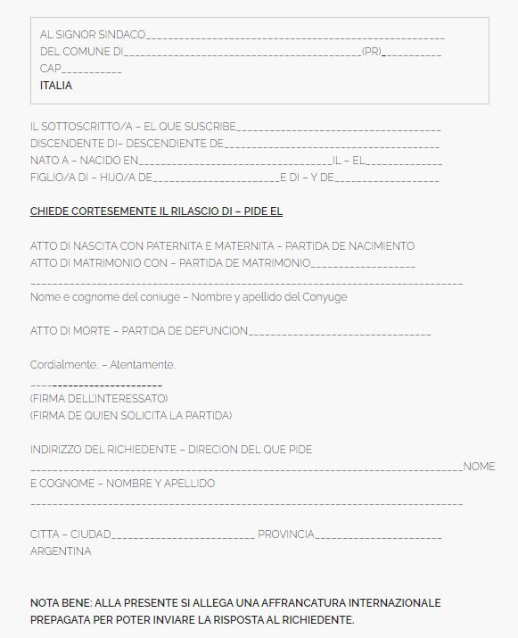

¿Que es un Comune? Un Municipio de Italia
¿Cómo solicitar un Acta a un Comune de Italia?
A continuación encontrarán un pedido de acta a un comune de Italia para que lo completen con sus datos y lo envíen.
Deberán enviarlo por email al comune correspondiente (no se adelanten, sabemos que están preguntándose sobre mails de comunas italianas, eso viene más adelante).
¡Recuerden! Es importantísimo adjuntar escaneada toda la documentación que brinde más datos sobre su solicitud de acta.
Pedido Acta Modelo
¿Cuánto tarda la respuesta? Alrededor de 60 días
Comunes de Italia
| Comune | Sitio | Ciudad |
|---|---|---|
| Andria | http://www.comune.andria.bt.it/ | Barletta-Andria-Trani (BT) |
| Anzano Di Puglia | http://www.comune.anzanodipuglia.fg.it/ | Foggia (FG) |
| Apricena | http://www.comune.apricena.fg.it/ | Foggia (FG) |
| Bari | http://www.comune.bari.it/ | Bari (BA) |
| Barletta | http://www.comune.barletta.bt.it/ | Barletta-Andria-Trani (BT) |
| Biccari | http://www.comune.biccari.fg.it/ | Foggia (FG) |
| Binetto | http://www.comune.binetto.ba.it/ | Bari (BA) |
| Bisceglie | http://www.comune.bisceglie.bt.it/ | Barletta-Andria-Trani (BT) |
| Bitetto | http://www.comune.bitetto.ba.it/ | Bari (BA) |